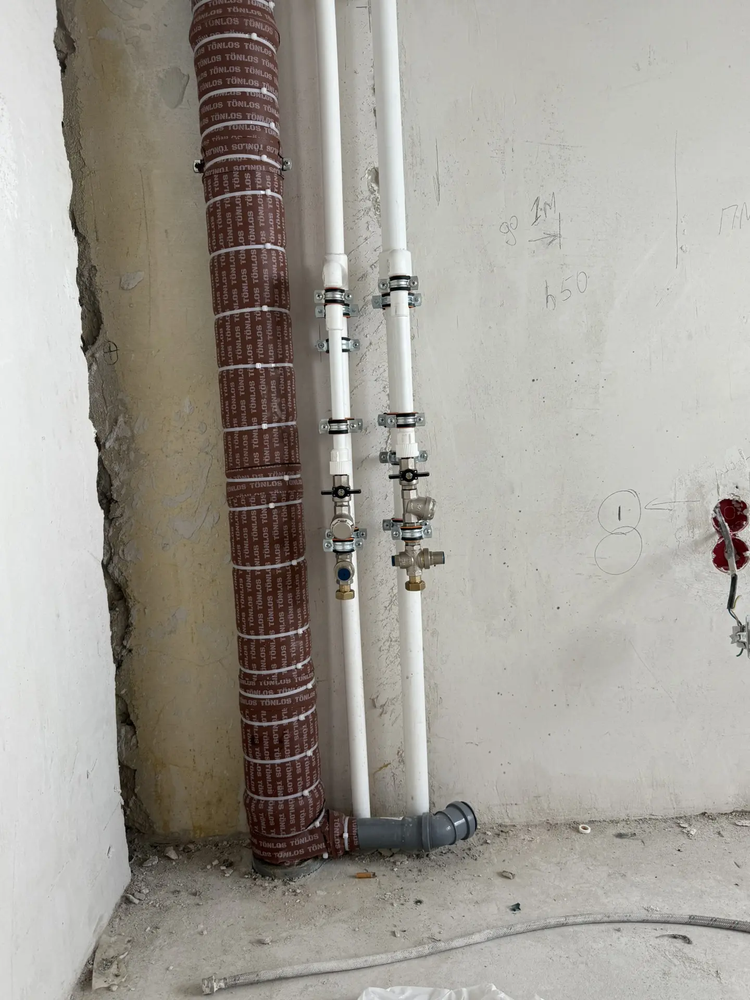
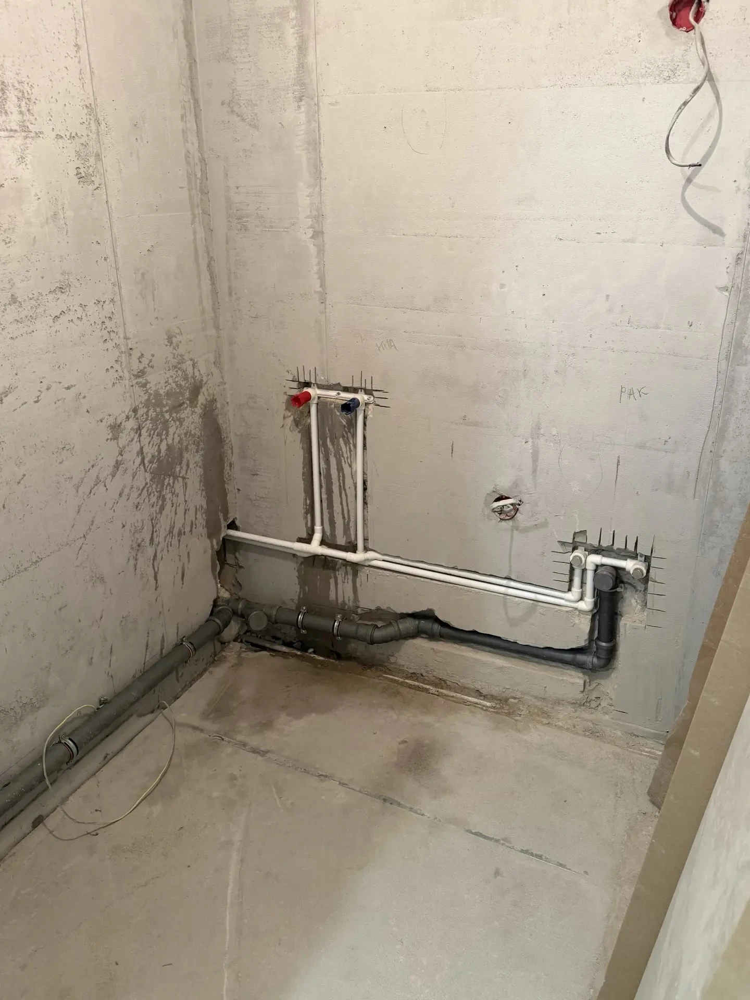

Монтаж систем водоснабжения и канализации. Работаю с полипропиленом, сшитым полиэтиленом, металлопластиком. Квартиры, частные дома, коммерция.
Ржавая вода, частые протечки, заросший диаметр. Пора менять на современные материалы.
Делаете ремонт в ванной или на кухне? Самое время заменить трубы и сделать правильную разводку.
В новостройках часто нужна разводка с нуля — от стояка до каждой точки подключения.
Если трубы текут регулярно — дешевле заменить их один раз, чем постоянно латать.
Вы платите один раз — без скрытых доплат и «неожиданных» расходов:
Составление точной сметы до начала работ
Аккуратный демонтаж старых труб без повреждения отделки
Пайка, прессовка, установка коллекторов и кранов
Тестирование системы под давлением, гарантия на стыки
📍 Нюансы замены труб в воронежских домах: В домах до 2000-х годов (большинство Центрального, Ленинского, Железнодорожного районов) стояки из черной стали — их замена требует согласования с УК и отключения воды по стояку. В новых ЖК на Левом берегу и Московском проспекте — коллекторная скрытая разводка из сшитого полиэтилена, и любая ошибка при пайке приведет к протечке в стяжке. Работаю с полипропиленом (Banninger, Valtec), сшитым полиэтиленом (REHAU) и металлопластиком. Все стыки делаю открытыми или в люках — чтобы при необходимости можно было обслужить без демонтажа плитки.
Реальные работы в Воронеже. Монтаж и замена труб в Воронеже.

Выполнено подключение к стоякам ХВС и ГВС. Канализационный стояк Ø110 мм обернут теплоизоляцией «Тонлос» — это обеспечивает шумоизоляцию и предотвращает образование конденсата. На трубах ХВС и ГВС установлены: шаровые краны с американками для удобного обслуживания, фильтры грубой очистки, клапаны понижения давления (редукторы) — защищают бытовую технику и соединения от гидроударов и повышенного давления в системе. Трубы закреплены на стене металлическими клипсами с шагом 50-60 см — исключено провисание и вибрация. Разводка выполнена открытым способом — все соединения доступны для обслуживания. Работа выполнена в новостройке, подготовка под чистовую отделку.

Выполнена полная разводка инженерных сетей в ванной комнате новостройки. Водоснабжение — полипропиленовые трубы PPR, проложены в штробах стен с выводами под смеситель (красный — ГВС, синий — ХВС). Канализация — трубы ПВХ Ø50 мм с соблюдением уклона 2 см на погонный метр для самотёка. Все трубы закреплены клипсами, разводка выполнена до чистовой отделки — после штукатурки и плитки останутся только выводы с кранами. Работа выполнена по коллекторной схеме — каждая точка подключена отдельной линией для стабильного давления. Система опрессована, протечек нет.
Эти ошибки я вижу чаще всего. Они приводят к протечкам и дорогому ремонту:
Даже качественный шов со временем может дать течь. Все стыки должны быть в доступных местах — люках, сантехнических шкафах. В стяжку можно класть только цельные трубы PEX без соединений.
Дешёвый полипропилен может лопнуть при перепаде давления. Используйте проверенные бренды: Banninger, Wavin, Rehau, Valtec. Разница в цене — 10-15%, а срок службы отличается в разы.
После монтажа систему нужно проверить давлением (опрессовать) — обычно 6-10 атм в течение 30 минут. Без этого вы узнаете о течи только после того, как затопите соседей.
Разводка труб — от 2 000 ₽ за точку подключения. Итоговая стоимость зависит от материала труб, схемы разводки и объёма работ. Точный расчёт — после осмотра.
Для водоснабжения рекомендую полипропилен (дешевле) или сшитый полиэтилен REHAU (надёжнее, но дороже). Для канализации — полипропиленовые трубы серого или оранжевого цвета.
Замена труб в ванной комнате — 1-2 дня. Комплексная разводка в квартире — 3-5 дней. В частном доме — от 5 дней до 2 недель.
Тройниковая схема — дешевле, но при включении нескольких точек падает давление. Коллекторная — дороже, но у каждой точки свой кран и стабильное давление. Для квартиры рекомендую коллекторную.
Да, замена стояка ХВС/ГВС требует согласования с управляющей компанией и отключения воды по всему стояку. Помогу с оформлением заявки и выполню работу в согласованное время.
Работаю по всему городу. Среднее время приезда — 30 - 90 минут.
Приеду на замер бесплатно, рассчитаю смету и предложу оптимальный вариант
📞 +7 (950) 754-25-49